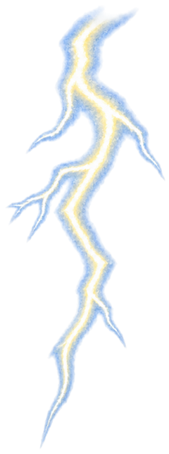

Manual mode ·
עַכְשָׁיו:
🗺
HLA
🏫 HLA
—
👆 click for words
מָלֵא
בְּלִי סִימוּן
חֶלְקִי
הַיּוֹם יוֹם ___.
עַכְשָׁיו ___.
בַּחוּץ ___.
יֵשׁ ___. / אֵין ___.
יוֹרֵד ___.
בַּחוּץ ___ מַעֲלוֹת.
›
Settings
Temperature
°F
°C
°F by default. Remembered on this computer. Key: U
⟳ Refresh weather
Not updated yet.
Manual mode
Pick the weather yourself (practice, or no internet).
Weather
Wind (יֵשׁ רוּחַ)
Snow on the ground (יֵשׁ שֶׁלֶג)
Time of day
Day
Temperature
↺ Back to live
Place name (nikud)
Type the name with nikud and press Enter. Saved for this place.
Motion off
⛶ Full screen
Keys: S settings · H help · M map · R refresh · U unit · F full screen · Esc close
← All games
…
בְּחַר
✕ סְגוֹר